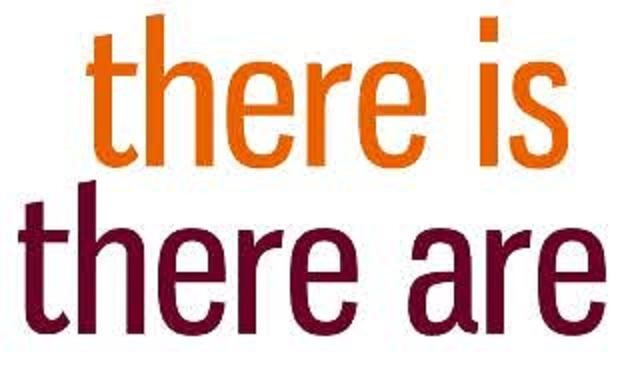

PENGGUNAAN THERE IS & THERE ARE
Haiii sobat....
Grammar adalah himpunan dari aturan-aturan yang terstruktur
yang mengatur susunan kalimat, frase, dan kata dalam bahasa apapun.
Di dalam tata bahasa Inggris ada tiga dasar tata bahasa, yaitu:
1. Etimologi
2. Orthographi
3. Sintaks
Pada kesempatan kali ini, saya akan membahas tentang materi bahasa Inggris
grammar tentang penggunan there are dan there is. Langsung saja kita simak berikut ini :

Penggunaan Dan Contoh Kalimat
Menggunakan Kata There is dan There are
There is
There is dalam bahasa Indonesia berarti 'DISANA ADA'namun to be 'is'disana
menunjukan bahwa objek yang ditujukan itu hanya SATU atau bisa disebut juga singular.
Sebelum objek biasanya dibubuhkan tanda a/an untuk menunjukan 'sebuah' atau 'seorang'
Contoh kalimat menggunakan There is
- There is a delicious new brand chocolate
(disana ada sebuah coklat enak dengan merk baru)
- There is a dog
(disana ada anjing).
- There is a little cake
(disana ada sebuah kue yang kecil)
- There is a red hat
(disana ada sebuah topi merah)
- There is a beautiful long dress in the boutique
(disana ada sebuah gaun panjang yang cantik di butik)
- There is a cute baby with her mother
(disana ada seorang bayi bersama ibunya)
- There is an orange fall down from its tree
(disana ada sebuah jeruk yang jatuh dari pohonnya)
- There is an empty box for put all your old cassettes
(disana ada sebuah kardus kosong untuk menyimpan kaset tuamu)
- There is a beautiful girl sitting in the beach alone
(disana ada seorang perempuan cantik sedang duduk di kursi taman)
There are
There are dalam bahasa Indonesia berari 'DISANA ADA'namun to be 'are'
disana menunjukan bahwa objek yang ditujukan BANYAK/LEBIH
DARI SATU atau bisa disebut juga plural. Dan di belakang kata benda/noun
ditambahkan huruf s/es sebagai penanda kata plurak atau banyak.
Contoh kalimat menggunakan There Are
- There are players of badminton
(disana ada banyak bulu tangkis)
- There are many fruits
(ada banyak buah)
- There are cows on the field
(disana ada banyak sapi dilapangan)
- There are models for teen magazine
(disana ada banyak model untuk majalah teen)
- There are cabbage
(disana ada banyak kubis)
- There are many people going to the mall during the weekend
(ada banyak orang yang pergi ke mall pada akhir pekan.)
- There are only ten students in this class now.
(ada hanya 10 siswa di kelas ini sekarang)
- There are jasmine flowers
(disana ada banyak bunga melati)
- There are three boys sitting on the bench
(ada tiga anak laki-laki sedang duduk diatas bangku)
- There are two chairs outside the class
(ada dua kusi diluar kelas)
Demikian materi yang dapat saya sampaikan
pada kesempatan kali ini, semoga dapat membantu teman-teman
dalam belajar bahasa Inggris.
~salam Semangat~